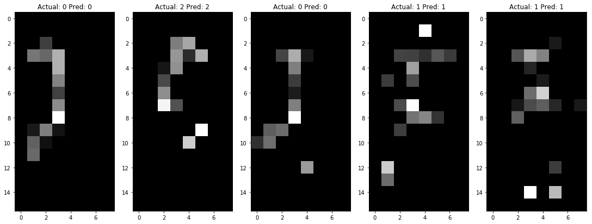

Mobile computing LAB에서 진행한 개인 프로젝트로 스마트 베드에 누운 사람의 자세를 딥러닝을 활용하여 판정하는 것에 대한 논문입니다. Scopus급 저널인 TEST Engineering & Management에 Discrimination of sleep posture using CNN in smart bed라는 제목으로 등재되었고 러시아 블라디보스토크에서 열린 IICCC2019 학회에서 Best Paper Award를 수상하였습니다.
이 프로젝트에 적용된 기술은 아래와 같습니다.
이전에 구축한 스마트 베드를 활용한 프로젝트로 스마트 베드 시스템에 딥러닝 기술을 적용하여 누운사람의 자세를 판정하는 프로젝트입니다.
// Keras를 통한 CNN 모델 구현
model = Sequential()
model.add(Conv2D(32, kernel_size=(2, 2), input_shape=(16, 8, 1), activation='relu'))
model.add(Conv2D(64, (2, 2), activation='relu'))
model.add(MaxPooling2D(pool_size=2))
model.add(Dropout(rate=0.25))
model.add(Flatten())
model.add(Dense(128, activation='relu'))
model.add(Dropout(rate=0.25))
model.add(Dense(3, activation='softmax'))
model.compile(loss='categorical_crossentropy', optimizer='adam', metrics=['accuracy'])Keras를 활용하여 CNN모델을 압력값 데이터에 맞게 수정하였고 실험 결과 자세판정 정확도는 94.42%였습니다.
이전의 연구에 비해 판정 정확도를 4%가량 개선하였고 더 많은 데이터가 수집될 때 정확도를 더 개선할 수 있습니다.